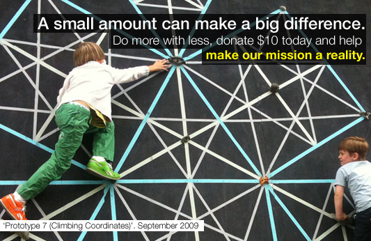
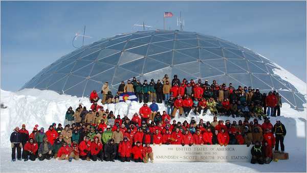

Welcome to Vol. 10 No. 11 of Design Science News, the e-bulletin of the Buckminster Fuller Institute
Design Science News brings you important updates about BFI’s programs and activities as well as news from around the world related to humanity’s option for success and comprehensive design science.BFI Needs Your Support Today!
Our year end fundraising drive is underway, and we need your support to help us end our year on budget. We encourage people to give at whatever level they can afford, but wish to emphasize the difference a donation as modest as $10 can make.
Read More and Donate Today.
From the Challenge Fellowship Blog
The Buckminster Fuller Challenge fellowship is designed to engage outstanding and motivated graduate students in critical thinking and decision-making using the BFI Challenge entries as context to provide practical, hands-on pedagogical experience assessing CADS based design. The One for 100% blog is a place for fellows to share their experience, explore ideas and exchange information with the Challenge community.
Click here to read the most recent postings, including a two-part video interview with Dr. Michael Ben-Eli by Challenge Fellow Sahar Ghaheri.
Two Classic Fuller Titles, Re-Released and Available Now!
BFI is proud to carry the recently re-released titles:
Ideas and Integrities: A Spontaneous Autobiographical Disclosure
Education Automation: Comprehensive Learning for Emergent Humanity
While Fuller wrote the works in the 1960’s and 1970’s, they could not be more timely: like desperately needed time-capsules of wisdom for the critical moment he foresaw, and in which we find ourselves. Long out of print, they are now being published again, together with commentary by Jaime Snyder, the grandson of Buckminster Fuller. Designed for a new generation of readers, Snyder prepared these editions with supplementary material providing background on the texts, factual updates, and interpretation of his visionary ideas.
Order your copies today!
To secure delivery by December 25th, please place orders for all store items before December 18th.
Trends and Perspectives
Statkraft Opens World’s First Osmotic Power Plant in Norway
Amidst news of massive solar and wind power plants comes word of a small but significant achievement--the world’s first osmotic power plant. Statkraft’s $7 million plant, located in Tofte, Norway, only produces enough energy to run a coffee maker, but it’s the first pilot plant to use the power produced when salt water and fresh water combine in a polymer membrane.
The power production process works with help from osmosis, which causes freshwater to be drawn towards seawater when placed in a membrane. Since the membrane only allows freshwater in, pressure is generated on the seawater side. The pressure is strong enough to drive a turbine.
Statkraft’s osmotic power process has been around since the 1970s, but until now, membrane technology was too expensive and inefficient to be worth it. Now that the technology is beginning to mature, Statkraft believes it could be viable anywhere that a river meets or comes close to the ocean.
Eventually, the company believes osmotic power will have the potential to power half of the EU. But before that can happen, Statkraft has to build a full-scale plant. That project is expected to be completed in 2015, but only if osmotic membrane technology improves enough to make it economically viable. So for now, we might want to focus on those jumbo wind, solar, and geothermal plants. (Source: Fast Company)
More about osmotic power
Farming for Apartment-Dwellers
Artists Britta Riley and Rebecca Bray want to take urban agriculture to a whole new level with their window farm project Window Farms. The idea? Grow your vegetables in vertical farms in your windows. Once they developed a prototype for Riley’s apartment they workshopped the idea with some nascent New York window farmers to see what worked and what didn’t. I spoke with Britta Riley about the project at the Eyebeam Gallery where a sample window farm was on display.
Jori Lewis: So, tell me what this window farm thing is all about.
Britta Riley: What we are doing is basically trying to start a window farming craze in New York City and other densely packed areas where it’s difficult for people who live in apartments, for example, to be able to grow some of their own food. We’ve come up with an initial seed design for a way to do this with a vertical hydroponic farm.
JL: How did you guys first develop and start working on this project?
BR: So what happened was I went to [project partner] Rebbecca [Bray] with this kind of crazy idea just because I was thinking about how I really wanted to do some gardening, but I lived in this four story building that had no access to dirt whatsoever. I couldn’t grow anything on my fire escape and of course horizontal space is in really short supply in New York and most dirt-based growing requires like a lot of horizontal space because the dirt is heavy. It made sense to just go with a vertical hydroponic system and to use the existing light in a window. So I went to her and I said let’s just monkey around with this and see if we can get something working and we did.
Continue reading the interview on the Next American City website.
Stateside Home Is Proposed for South Pole Dome
A geodesic dome that sheltered scientists and support workers at the South Pole for three decades is due to be demolished in the next few months, having outlived its usefulness at the bottom of the world.
But a small group of polar veterans is trying to preserve the dome, arguing it is a signature feature of the United States Antarctic program. They want the 55-foot-high aluminum structure taken apart the same way that Navy Seabees assembled it, bolt by bolt and panel by panel, for reassembly stateside.
“If you saw anything about the South Pole, that dome would always be the symbol that you saw,” said Billy-Ace Baker, a former Navy radio operator in Antarctica and a founder of the Old Antarctic Explorers Association, who is involved in the effort.
Continue reading on NYTimes.com
Resources
Upland Hills School Sustainability Award
The purpose of the Upland Hills Sustainability Award (UHSA) is to enhance the traditional and creative methods that currently support and sustain Upland Hills School while working toward the realization of the long range plan developed by the UHS board in 2003.
The UHSA is thus our invitation to the greater community to encourage creative thinking and to apply that thinking to leveraging forward days. We have chosen to invest not only in our school but in ideas to capture creative sustainable solutions in these challenging economic times. We are looking for specific strategies that create alternative income streams which support UHS and its mission.
For those who are courageous enough to create a strategy that will help UHS sustain itself into the future, the following will be awarded at a ceremony on Saturday, February 27, 2010.
1st place - $5000
2nd place - $3000
3rd Place - $1000
Find out more about the UHSA here.
GOOD.is/Ideas For Cities
Notes from a continuing brainstorm on the future of cities
Just one of the many highly relevant and frequently updated columns on GOOD.
BFI on Facebook
BFI on Twitter
To unsubscribe from this newsletter, send email to this address.
To never receive email from The Buckminster Fuller Institute, send email to this address.
This email is sent from:
The Buckminster Fuller Institute
181 n 11th street
Brooklyn, NY 11211 {domain.address}